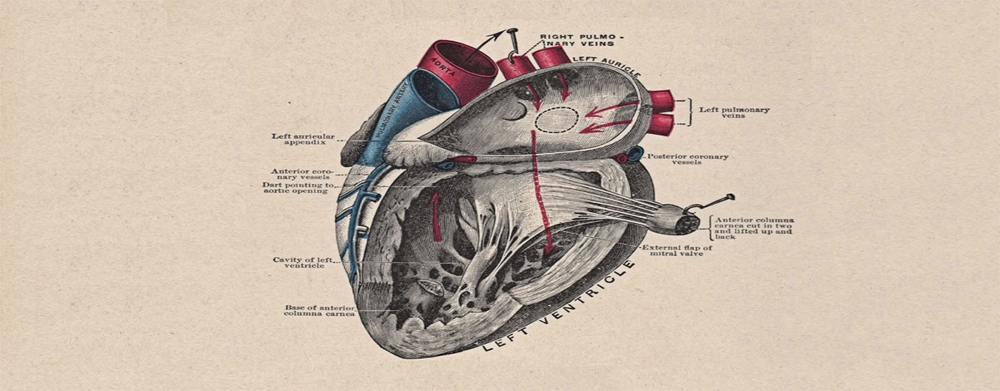

Kuno ašys
Žmogaus kūne galima pravesti 3 ašis: stačioji – eina iš viršaus į žemyn. skersinė – iš kairės į dešinę, arba iš dešinės į kairę. strėlinė – eina kaip strėlė, iš priekio į nugarą.
Plokštumos – vidurinė arba medialinė plokštuma atskiria dvi žmogaus puses. Horizontalioji – į dvi puses dalina žmogaus kūną į viršutinę ir apatinę dalis. Frontalioji – dalija į priekinę ir užpakalinę puses.